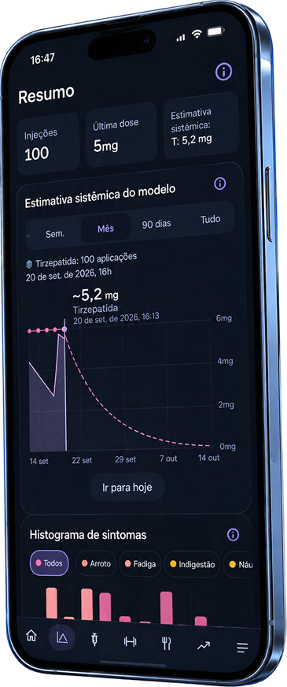
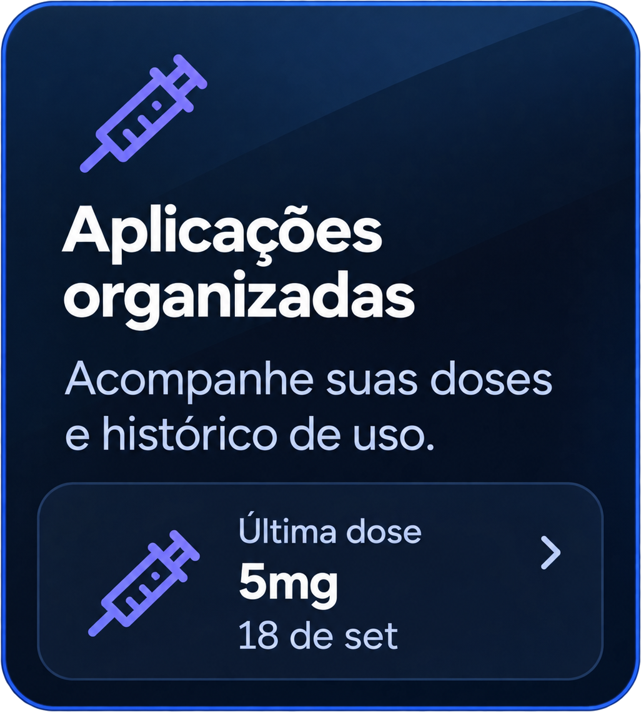
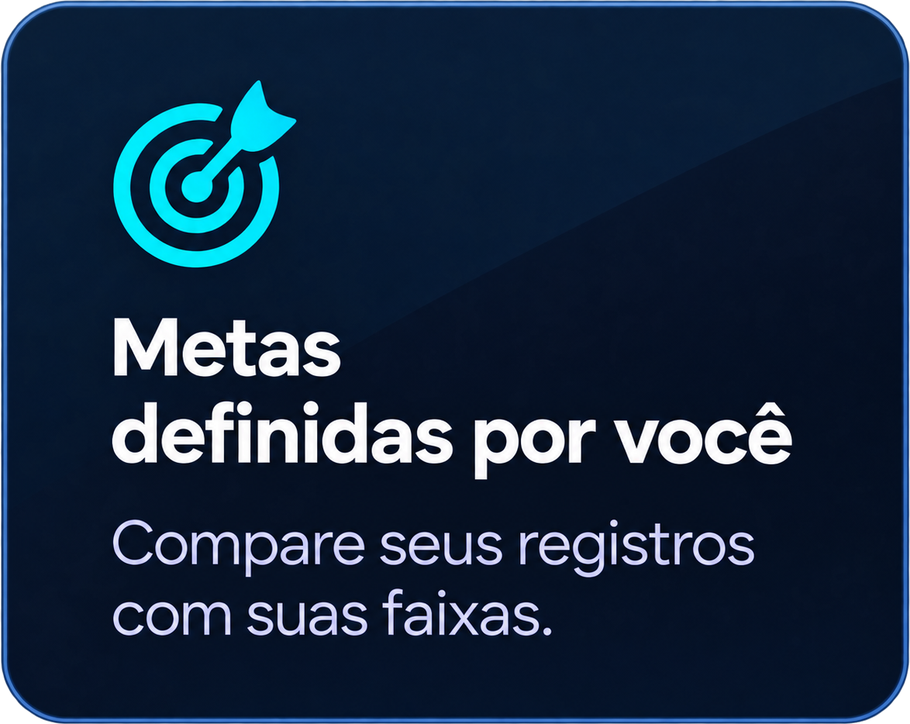
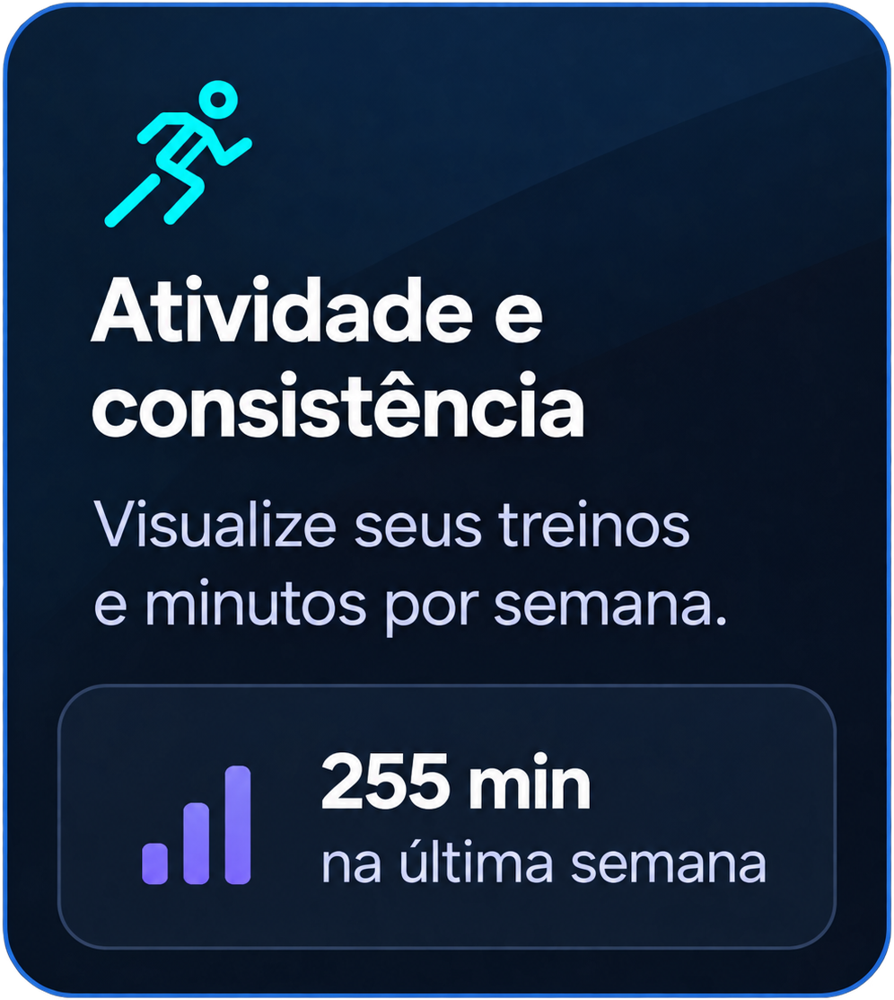

Privacidade
Veja quais dados ficam no aparelho, quando ocorre comunicação com a Apple e como exportar ou apagar seus registros.
Ler Política de Privacidade PepDozy™: GLP-1
PepDozy™: GLP-1
Criado a partir de uma história real
O PepDozy™ reúne aplicações, peso, alimentação e sintomas para dar contexto à sua evolução. Veja o caminho que percorreu, acompanhe o dia a dia e leve à consulta informações que ajudam a contar a sua história.
O PepDozy™ registra, não recomenda.
As estimativas são educativas, baseadas no histórico informado e em parâmetros médios populacionais. Não medem níveis no sangue e não substituem orientação profissional.
Por que o PepDozy™ existe
Em 2004, aos 15 anos, eu pesava 152 kg. Vivi a obesidade mórbida, a cirurgia bariátrica, o reganho de peso e, depois, o tratamento com tirzepatida. Foi dessa experiência que nasceu o PepDozy™.
Sou desenvolvedor individual e criei o app sozinho, sem patrocínio, para ajudar outras pessoas a enxergarem a própria jornada com mais contexto — sem substituir o profissional de saúde. Cada trajetória tem seu ritmo; dificuldades e conquistas merecem ser vistas sem culpa e sem uma única medida de sucesso.

Sua história, com suas palavras
O que você sente, enfrenta e conquista merece atenção. No Meu Diário, escreva livremente ou use perguntas opcionais para refletir. Revisite sua semana e releia sua trajetória com suas palavras.
O compartilhamento fica a seu critério.
Um app independente
Escolhi um preço acessível para caber em mais rotinas e sustentar a manutenção e as melhorias do app. Os planos, valores e condições válidos são sempre os apresentados pela Apple antes da confirmação na App Store.
Veja quais dados ficam no aparelho, quando ocorre comunicação com a Apple e como exportar ou apagar seus registros.
Ler Política de PrivacidadeConsulte os limites do app, a licença padrão da Apple e as condições factuais das assinaturas.
Ler informações de usoConsulte métodos, parâmetros, fontes regulatórias e os limites das estimativas educativas do aplicativo.
Consultar referências técnicasEncontre o contato oficial e orientações para relatar falhas sem compartilhar dados clínicos.
Acessar suporte

